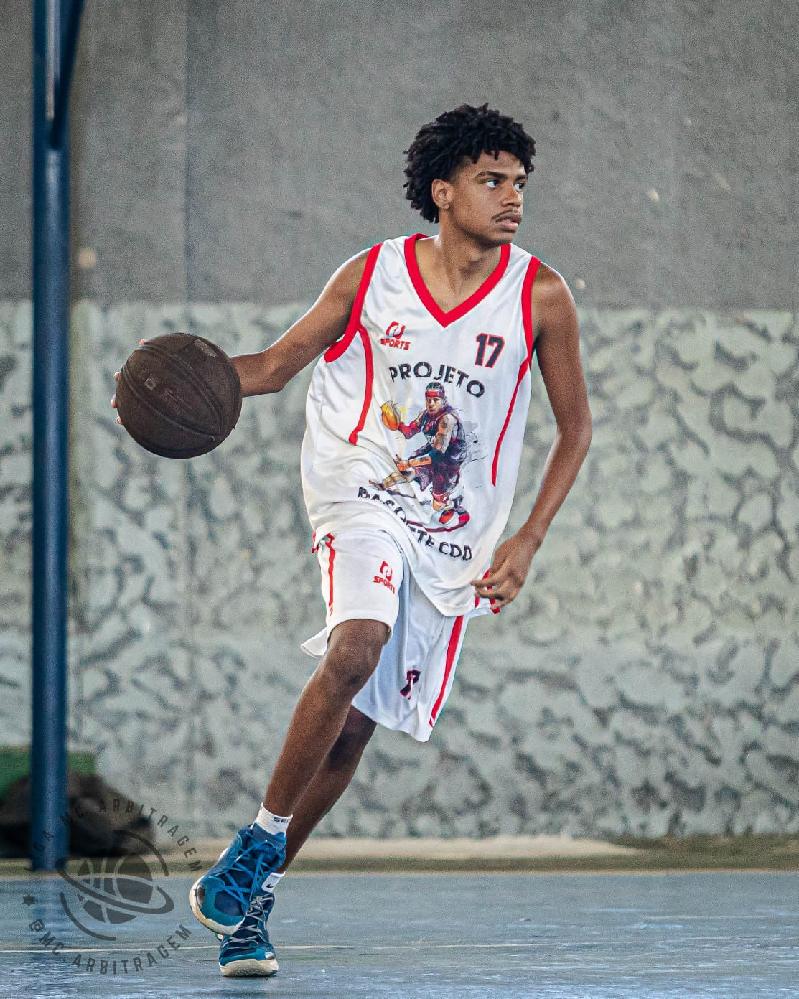
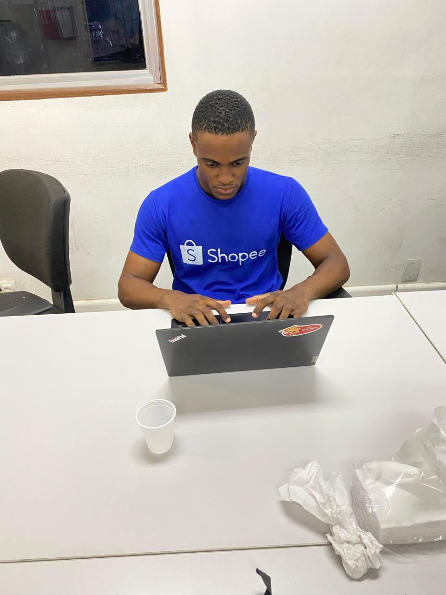

O que nossos clientes dizem

"Consegui 3 entrevistas na primeira semana após atualizar meu currículo com a Start!"
- Kaio Victor, Desenvolvedor Web

"Consegui muitas visualizações após atualizar meu LinkedIn com a Start!"
- Andrey Matheus, Last-Mile
"O serviço de Job Hunter me colocou em contato com empresas que nem imaginava que poderiam me contratar!"
- Maria Silva, Analista de Marketing